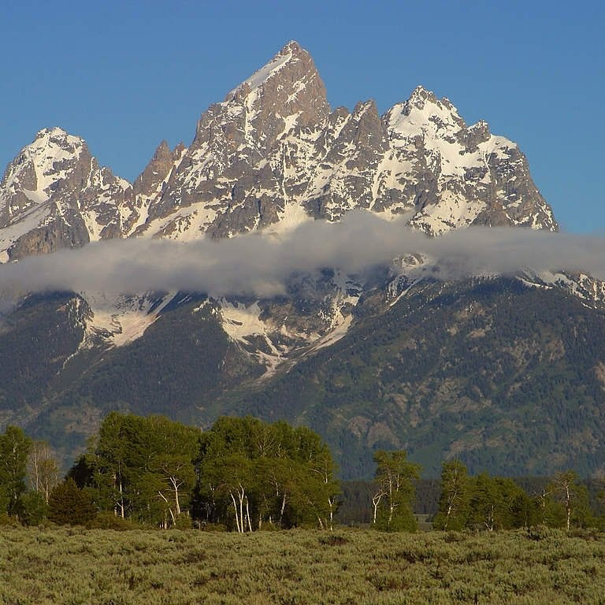
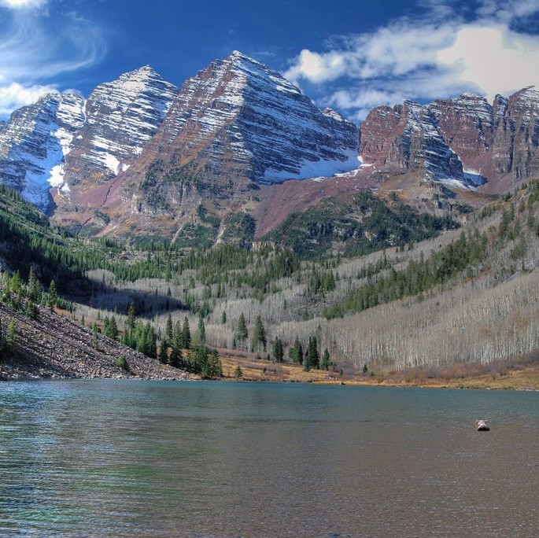
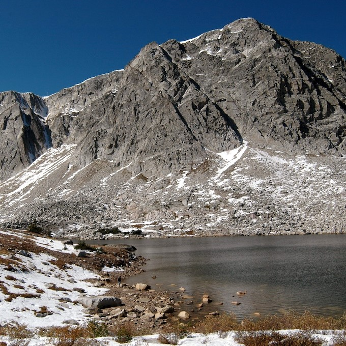

Grand Teton

Teton county, Wyoming, United States
Elevation: 13,775 ft
Maroon Peak

Pitkin and Gunnison counties, Colorado, United States
Elevation: 14,163 ft
Medicine Bow Peak

Albany and Carbon counties, Wyoming, United States
Elevation: 12,018 ft